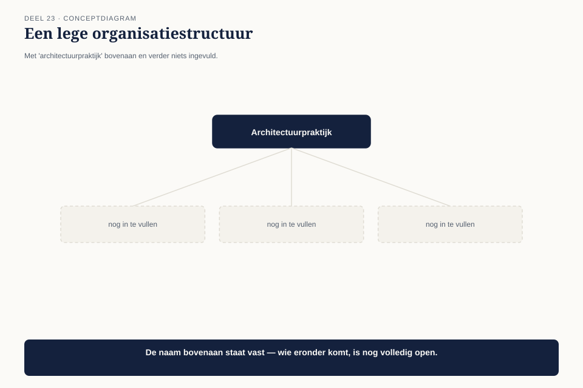
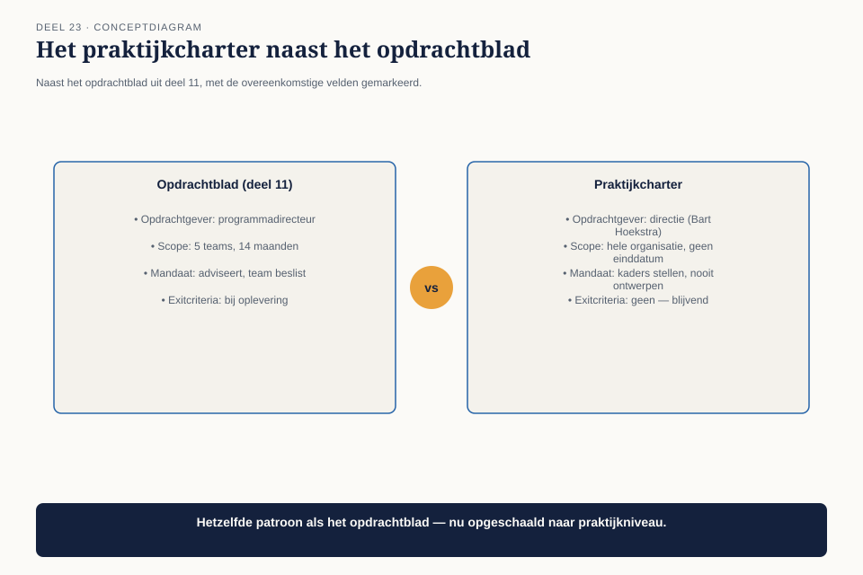
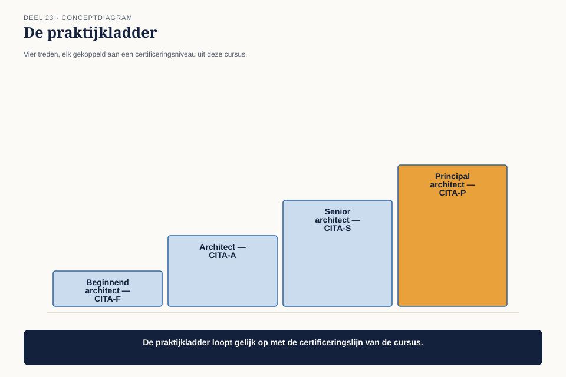

Deel 23 — De architectuurpraktijk
Slidedeck · Ductus-cursus BTABoK · Niveau 3 · deel 23 van 30 · 24 slides
Slide 1 — Titel: De architectuurpraktijk
Deel 23 — start van niveau 3
Ductus
Slide 2 — Statement: Niveau 1: wat een architect moet kunnen
Niveau 2: hoe je dat aanbiedt als dienst · Niveau 3: hoe je een praktijk opbouwt en leidt
Slide 3 — Agenda: Vandaag
- Acht tot tien architecten, geen charter
- De praktijk als eigen entiteit
- Rollen en een ontwikkelpad
- Het praktijkcharter voor Wtp
Slide 4 — Sectie: Nieuwe casusfase
Slide 5 — Bullets: Twee jaar later
- Mutatieplatform stabiel, licht governancemodel intact
- Claudette: CITA-A gecertificeerd, Solution-spoor
- Meridiaan staat voor de Wet toekomst pensioenen (Wtp)
- De grootste verandering in het bestaan van het bedrijf
Slide 6 — Sectie: 1. Acht tot tien architecten, geen charter
Slide 7 — Citaat: Bouw de architectuurpraktijk die we nodig hebben voor de Wtp-overgang.
Bouw de architectuurpraktijk die we nodig hebben voor de Wtp-overgang.
— Bart Hoekstra, CTO
Slide 8 — Figuur: Een lege structuur

Slide 9 — Statement: "Sluit je gewoon aan" — deel 11
Nu op praktijkniveau, niet op persoonsniveau
Slide 10 — Sectie: 2. De praktijk als eigen entiteit
Slide 11 — Figuur: Opdrachtblad naast praktijkcharter

Slide 12 — Tabel: Wat verandert
| Veld | Opdrachtblad | Praktijkcharter |
|---|---|---|
| Scope | 5 teams, 14 maanden | hele organisatie, geen einddatum |
| Exitcriteria | bij oplevering | geen — blijvend |
Slide 13 — Statement: Hetzelfde onderscheid als deel 19
Project versus product — nu op de praktijk zelf
Slide 14 — Opdracht: Opdracht 1 — Van opdrachtblad naar praktijkcharter
25 minuten, individueel
Eigen organisatie · zes velden
Slide 15 — Sectie: 3. Rollen en ontwikkelpad
Slide 16 — Figuur: De praktijkladder

Slide 17 — Tabel: Vier rollen
| Rol | Certificering |
|---|---|
| Beginnend architect | richting CITA-F |
| Architect | CITA-A |
| Senior architect | richting CITA-S |
| Principal architect | richting CITA-P |
Slide 18 — Statement: Deze cursus is zelf een praktijkladder
Drie niveaus, oplopend in certificering — geen toeval
Slide 19 — Opdracht: Opdracht 3 — De praktijkladder
20 minuten, individueel
Eigen vakgebied · concreet criterium per overgang
Slide 20 — Sectie: 4. Het praktijkcharter voor Wtp
Slide 21 — Bullets: Het keuzemenu aan Bart
- Klein (4 architecten): goedkoper, hoger risico
- Groot (8-10): duurder, hogere dekkingsgraad (deel 16)
- Bart kiest — het is een onderhandeling, geen eis
Slide 22 — Opdracht: Opdracht 4 — Het keuzemenu voor praktijkomvang
20 minuten, groepen van 3-4
Twee opties · prijs en risico expliciet
Slide 23 — Bullets: Wat dit deel heeft opgeleverd
- Het praktijkcharter als opdrachtblad op organisatieniveau
- Project- versus productpraktijk
- De praktijkladder, gekoppeld aan F/A/S/P
Slide 24 — Titel: Volgende keer
Deel 24
De opbouw van de praktijk voor de Wtp-overgang vervolgt.